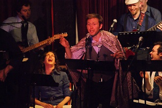
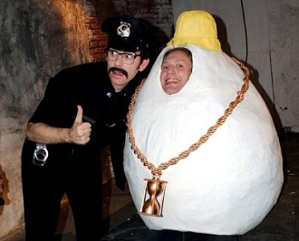

RYAN HARRISON
Head Writer / Composer / Actor
Ryan Harrison is an Earth-based life form who has been working for years with many of the writers and performers featured in Lost Moon Radio. His work has been featured on Comedy Central and Atom Films. In 2008, Yahoo named one of his shorts the ”Best Comedy Video of the Year.” Ryan has also performed extensively in the analog world since graduating from Northwestern University, gracing such hallowed halls as The Bitter End (NY), Birdland (NY), Spaceland (LA), The Hotel Cafe (LA), The People’s Improv Theater (NY), and Improv Olympic (LA). He has been called the ”Most Handsome Man of the Year,” but the person who made that remark has been called ”The Biggest Idiot Ever.”
Ryan in Action...

Performing "Mercutio LIVE" at Cafe-Club Fais Do Do.

With Dan Oster on the set of "Chicken vs. Egg."